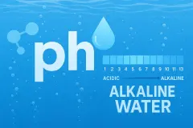
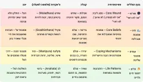
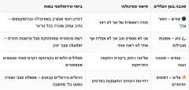
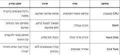
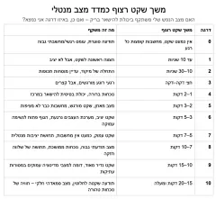

מים · נשימה · תודעה
יאיר אהרון כהן
קורסים דיגיטליים, סדנאות ותהליכי צמיחה
ללמוד ולהתנסות
קורסים וסדנאות


להתחבר ולקבל תמיכה
קבוצות ומעגלים


ידע מעשי ומעמיק
מאמרים — מים
שיטת מַיִם מַרְוִיםגישה חדשה להבנת מים והרוויה
סינון מים — מדוע אוסמוזה ומדוע ימה
נחושת ותכונותיה

מיתוס המים הבסיסיים מים בסיסיים חזקים: מה הסיכון למערכת העיכול? מיתוס שקית התה ו״החדירה לתאים״ מהי בצורת תאית? משמעות תנועת הוורטקס במערכת ימה ובמים איך לייצר וורטקס במים בקלות ובבית שתיית מים מזוקקים — ניקוי עמוק או פירוק הגוף? זאוליט — מינרל לניקוי מתכות ורעלים מהגוףלהכיר את העולם הפנימי
מאמרים — תודעה
הנפש — הנפשת התודעה לשני קטבים
הגוף כמחשב הידרופילי ביו־אלקטרי
הילד הפנימי כמחשב רגשי שמבקש הורה
האני כמחשב — ארבע שכבות של מערכת התודעה

מהו עץ הצללים?
עץ הצללים כמבנה נוירופלסטי
המוח כמחשב, והשקט ככפתור סגירת משימות תורת המראות
השקט הפנימי — האם הוא ניתן להשגה? טבלה מורחבת — השקט הפנימי